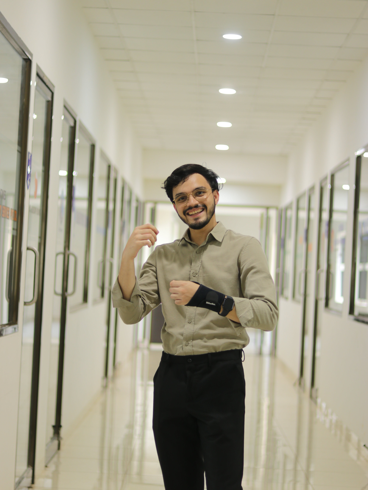

Rifaath Ameen.
Specialising in computer vision, generative AI, and multimodal systems at FAU Erlangen-Nürnberg. I build real systems, learn from talented people, and tackle problems that matter.
About Me
Hello — I'm Rifaath, an AI Master's student at FAU Erlangen-Nürnberg, Bavaria, Germany. My research sits at the intersection of computer vision, biomechanics, and multimodal AI — from building real-time pose-based surf maneuver classifiers to automating palaeographic analysis of 2,000-year-old papyri.
I'm a Digital Tech Fellow at FAU (1 of 21 from 200+ applicants) and currently a Graduate Research Assistant at the Machine Learning & Data Analytics Lab, building a multi-modal pipeline for golf swing biomechanics using Vicon motion capture and TrackMan sensor data.
I'm currently writing my Master's Thesis at BMW Group, building a parameterized synthetic-data pipeline in Blender that searches procedural cabin configurations for failure-inducing scenarios — evaluated against a 120° camera mounted below the rear-view mirror.
Before Germany, I completed my B.E. in AI & Machine Learning at NMAM Institute of Technology, Karnataka, where my project ACCENDIA won Best Project of the Year and received an Indian patent.
Outside research: driving, photography, trekking, track-racing. Fluent in Malayalam (native), English (C1), and actively learning German.

Experience
— Present
- Building a parameterized synthetic-data pipeline in Blender for in-cabin monitoring research.
- Designing a search strategy over procedural scene parameters to surface failure-inducing cabin configurations, evaluated against a 120° camera mounted below the rear-view mirror.
— Present
- Building a multi-modal biomechanics pipeline fusing Vicon motion capture, TrackMan ball-flight sensor data, and video across 10+ sessions.
- Developing pose estimation tooling and mocap database infrastructure for open-source release.
- Domain: Golf Swing Analysis & Dataset Creation.
— Mar 2026
- Creating programming exercises on algorithms and data structures for the Algorithms, Programming and Data Representation lecture.
- Coordinating with teaching staff and developing an automated evaluation system for instant feedback on student code submissions.
— Aug 2023
- Conducted workflow analysis across 10+ departments, identifying 5 critical inefficiencies and delivering an AI automation roadmap projecting 30% reduction in manual processing time.
- Audited existing security infrastructure and delivered prioritised recommendations for IoT integration and cybersecurity enhancements — 3 initiatives approved for immediate implementation.
— Jul 2023
- Engineered a production-ready GPT-based API endpoint for automated content generation — ~80% reduction in creation time.
- Benchmarked 6+ LLMs (GPT, BERT, T5) across 4 metrics to guide model selection for 2 client projects.
- Enhanced retrieval efficiency with FAISS indexing, reducing search time by 25%.
Research & Projects
Professional surf judging is subjective and inconsistent. Built a two-stage real-time pipeline — RTMO pose extraction → temporal classification — on 146 WSL competition clips across 5 maneuver classes. Engineered a 75-channel biomechanical feature representation (COCO-17 keypoints + 24 kinematic signals: knee compression dynamics, CoM trajectory, torso rotation).
Automated palaeographic analysis hindered by lacunae, ink degradation, and absent labelled data. Adapted YOLOv8-Medium + SAHI tiling for 4000×4000px scans (34,478 glyphs, 94 writers). Diagnosed and corrected a source-library shortcut bias in SimCLR; pivoted to ResNet50 + Triplet Margin Loss with Batch-Hard Mining and SimpleVLAC aggregation.
Static lecture content fails to adapt to varying student expertise. Selected for Ferienakademie 2025 (FAU, TUM, Uni-Stuttgart). Implemented a RAG-based prompt engineering pipeline that dynamically adjusts lecture complexity, deployed via containerised microservices to the open-source community.
Retrieving specific information from large private document corpora is slow and error-prone. Built a private Q&A system integrating GPT-3.5T and Gemini 1.5 Pro with FAISS-backed semantic search, enabling source-grounded answers across multi-document collections. Filed patent at the Indian Patent Office (Ref No. 202441036620). Awarded Best Project of the Year university-wide.
Built a motion magnification system to detect heart rate non-invasively from video using Eulerian video magnification and signal processing — improving remote health monitoring without contact sensors.
Built an R-CNN-based model to detect and segment ships in satellite images, targeting maritime surveillance and automated detection of illegal infractions at sea.
Designed an RFID-based automated attendance system with Arduino, MySQL, and PHP. Real-time tracking with a web dashboard — eliminating manual roll-call entirely.
Developed a CNN-powered visual search engine using ResNet50 feature extraction to retrieve visually similar images from a dataset — an early exploration of embedding-based retrieval.
Technical Skills
Education
Achievements
Digital Tech Fellow, FAU Erlangen-Nürnberg
Selected as 1 of 21 from 200+ applicants. Invited as Resource Person for a Faculty Development Programme on LangChain, OpenAI, and the Future of Computer Vision & ML.
Ferienakademie 2025 — Selected Participant
Selected for the prestigious summer academy (FAU, TUM, Uni-Stuttgart) for the ORPHEUS AI lecture generation project.
Indian Patent — ACCENDIA (Ref No. 202441036620)
Patent filed and published at the Indian Patent Office for a private multi-document Q&A system using RAG and multi-LLM support.
Hackathon & Competition Awards
Finalist — HackOverflow 1.0 (National) · 2nd — Byte Battle (ACM & HackerEarth Hub NMAMIT) · 2nd — MATRIX Coding Contest · 2nd — NMAMIT Circuit 03 · 3rd — WKND.HACK (IEEE) · 3× Winner — NMAMIT Coding Contest · Best Working Model — NIMS Dubai
Let's Collaborate.
Whether it's research, an internship, a project, or just a conversation about AI — my inbox is always open.
rifaathm.a@gmail.com